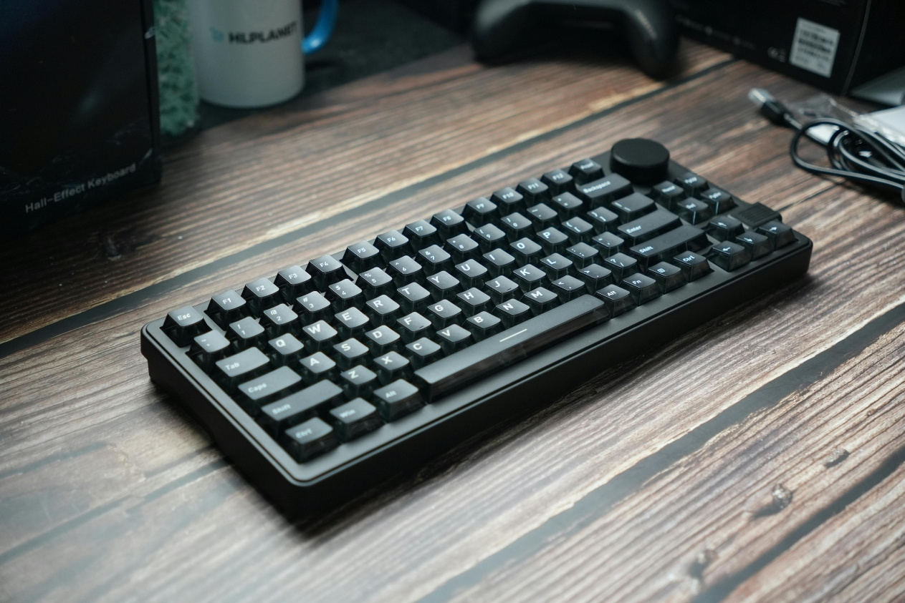

Logitech K120

Precio: $125.000
Descripción
Este teclado combina un diseño robusto con tecnología de vanguardia para ofrecer una experiencia de escritura y juego superior. Su acabado en negro mate y su estructura compacta lo hacen ideal para optimizar el espacio en tu escritorio sin sacrificar funcionalidad. Cuenta con una perilla multimedia giratoria en la esquina superior derecha, permitiéndote controlar el volumen de forma rápida e intuitiva. Las teclas mecánicas proporcionan una respuesta táctil precisa, ideal para largas sesiones de programación o gaming intenso.
| Especificaciones | Detalle del producto |
|---|---|
| Características Técnicas |
|
| Información Adicional |
|